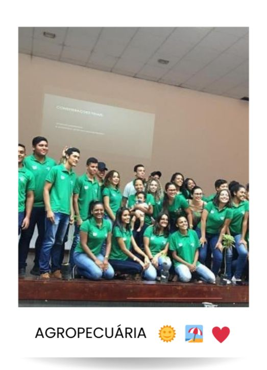

AGROPECUÁRIA

O que é Agropecuária?
O termo Agropecuária é uma junção das palavras “agricultura” e “negócio”, que são atividades essenciais para o abastecimento da sociedade. Isso porque dão origem ao cultivo para a alimentação de humanos e animais, como também fornecem matéria-prima para a indústria em geral.
O termo Agropecuária é uma junção das palavras “agricultura” e “negócio”, que são atividades essenciais para o abastecimento da sociedade. Isso porque dão origem ao cultivo para a alimentação de humanos e animais, como também fornecem matéria-prima para a indústria em geral.
Dessa forma, as mais diferentes atividades englobadas pelo setor podem ser entendidas como a base da
agropecuária, já que
envolvem a produção de insumos para a agroindústria.
